StereoGS
Sparse-View 3D Gaussian Splatting via Stereo Priors
TL;DR
StereoGS brings stereo priors into sparse-view 3D Gaussian Splatting, enforcing absolute scale and cross-view consistency through virtual stereo pairs, a gradient-aware opacity decay, and a zero-shot MVS initialization. It achieves state-of-the-art results on LLFF, DTU, Mip-NeRF360 and Blender — with zero inference overhead compared to vanilla 3DGS.
Stereo Depth Regularization
Virtual stereo pairs + FoundationStereo deliver absolute-scale, cross-view-consistent depth supervision.
Gradient-Aware Opacity Decay
Exponential soft-thresholding of relative opacity gradients prunes floaters while preserving surface Gaussians.
Dense MVS Initialization
Zero-shot MVSAnywhere + cross-view reprojection filtering yields a dense, view-consistent point cloud.
Abstract
3D Gaussian Splatting (3DGS) has achieved remarkable success in real-time novel view synthesis, yet it suffers from severe overfitting under sparse-view settings due to insufficient geometric constraints. While recent methods introduce monocular depth priors to mitigate this, they inherently struggle with scale ambiguity and cross-view inconsistency, leading to defective geometry.
In this paper, we propose StereoGS, a novel sparse-view 3DGS framework that integrates stereo priors to establish reliable cross-view consistency. Unlike scale-agnostic monocular constraints, StereoGS introduces a Stereo Depth Regularization by constructing virtual stereo pairs during optimization and leveraging a foundation stereo model to enforce absolute scale and cross-view-consistent structures.
To further suppress overfitting and eliminate redundant primitives, we design a Gradient-Aware Opacity Decay strategy that dynamically penalizes Gaussians based on their relative opacity gradient magnitudes. Combined with a Consistency-Aware Dense Initialization using zero-shot multi-view depth estimation, StereoGS effectively anchors primitives to accurate scene surfaces. Extensive experiments on LLFF, DTU, Mip-NeRF360, and Blender datasets demonstrate that StereoGS achieves state-of-the-art performance in sparse-view settings without incurring any additional inference overhead.
Method
Three training-time components that turn monocular-cue fragile sparse-view 3DGS into a scale-aware, cross-view-consistent reconstruction pipeline.
Stereo Depth Regularization
For each training view treated as the left camera, we synthesize a virtual right camera via
horizontal translation and render the corresponding right-view image from the current 3D
Gaussians. Feeding the ground-truth left image and the rendered right view into
FoundationStereo produces a left-view disparity that we convert to depth
Zstereo = fd/D̂l and supervise against the rendered depth
in inverse-depth space.
To prevent noisy priors from corrupting geometry, we filter pixels with a
left-right consistency check, a background mask, and a
disparity anomaly mask, fused into a final validity mask
Mvalid. The resulting loss reads
Ldepth = ‖ Mvalid ⊙ (1/Ẑ − 1/Zstereo) ‖1
Unlike photometric warping, this directly pushes Gaussian primitives toward scale-accurate and cross-view-consistent geometry.
Gradient-Aware Opacity Decay
We argue that an opacity gradient magnitude inherently reflects a Gaussian's contribution to
reconstruction: large gradient → important; negligible gradient → redundant
floater. Because raw opacity gradients are tiny (∼10−6), we adopt a
relative gradient β = g/ḡ (inspired by GRPO in DeepSeekMath) and
use an exponential soft-threshold to produce the dynamic decay factor
γ = 1 − (1 − γbase) · exp(−s · β),
α̂ = γ · α
Gaussians with below-average gradients are heavily penalized (background floaters get
pruned), while above-average valid surfaces are quickly retained. Default:
γbase = 0.99, s = 0.5.
Consistency-Aware Dense Initialization
Sparse SfM points are insufficient under few-view conditions. We instead run the zero-shot MVS model MVSAnywhere on every training view (as target) with the remaining views as sources to obtain a set of cross-view-consistent depth maps. Cross-view reprojection errors are then used to filter outliers, and the filtered depths are back-projected and fused into a dense, reliable point cloud as the Gaussian initialization.
The strong zero-shot generalization of MVSAnywhere makes this initialization significantly denser and cleaner than PDCNet+ and MVSFormer on in-the-wild scenes.
Visual Comparisons
Novel view synthesis and rendered depth on four standard benchmarks. Zoom in for details.
LLFF
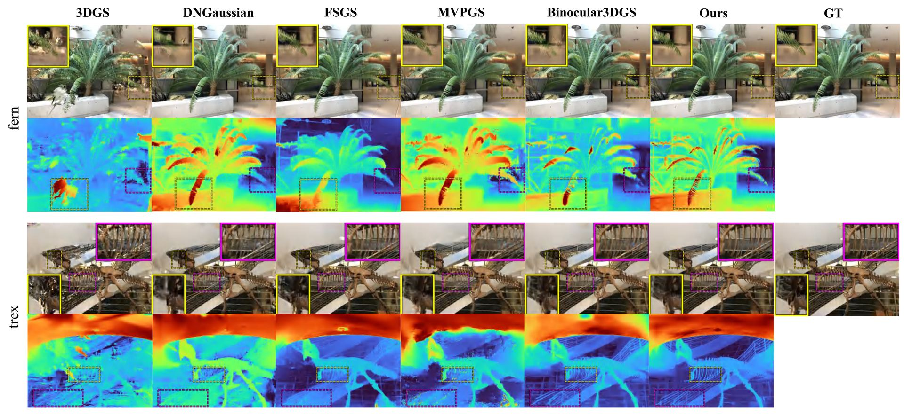
On fern and trex, vanilla 3DGS shows severe patchy artifacts; monocular-depth methods (DNGaussian, FSGS) recover rough geometry but fail on fine structure. MVPGS and Binocular3DGS still produce artifacts in textureless regions. StereoGS reconstructs clean surface skeletons (e.g., the trex) and crisp depth.
DTU
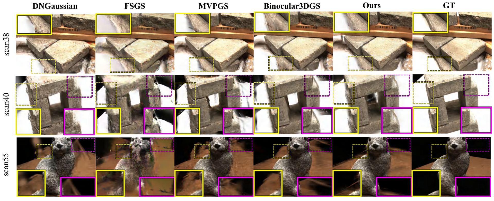
DNGaussian, FSGS, and MVPGS produce blurry results; Binocular3DGS shows textureless-region artifacts due to its self-supervised photometric loss. StereoGS delivers sharp details and accurate depth on all three scenes.
Mip-NeRF360
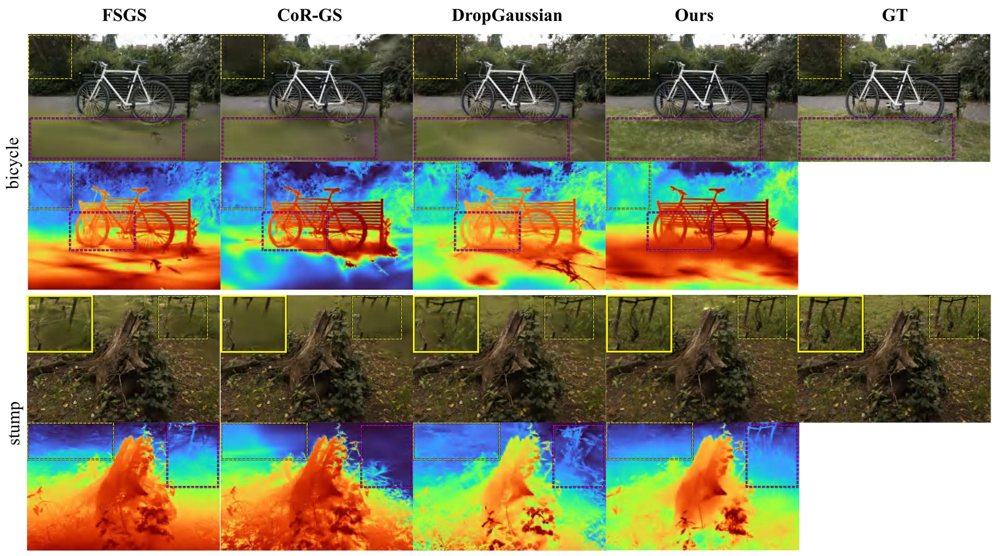
On the bicycle and stump scenes, baseline methods (FSGS, CoR-GS, DropGaussian) exhibit prominent artifacts in large textureless grass areas. StereoGS preserves the high-frequency details and produces the most coherent depth maps.
Blender
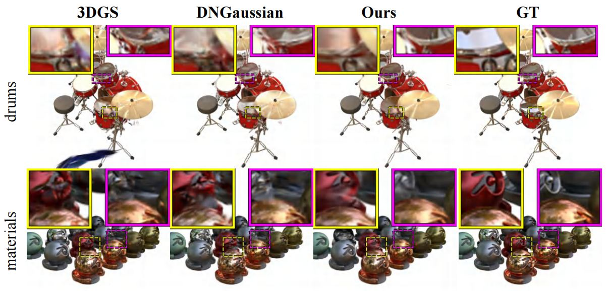
On the synthetic Blender dataset, StereoGS consistently outperforms all baselines across PSNR/SSIM/LPIPS, demonstrating its capability in object-centric sparse-view reconstruction.
Quantitative Results
StereoGS achieves state-of-the-art PSNR / SSIM / LPIPS across LLFF, DTU, Mip-NeRF360 and Blender under every sparse-view configuration tested. Ours* denotes the variant with a fixed dropout rate of 0.3.
LLFF (3 / 6 / 9 views)
| Method | 3-view PSNR↑ | 6-view PSNR↑ | 9-view PSNR↑ |
|---|---|---|---|
| 3DGS | 16.02 | 19.45 | 21.13 |
| DNGaussian | 19.12 | 22.18 | 23.17 |
| FSGS | 20.31 | 24.20 | 25.32 |
| CoR-GS | 20.45 | 24.49 | 26.06 |
| MVPGS | 20.54 | 23.64 | 24.23 |
| DropGaussian | 20.76 | 24.74 | 26.21 |
| NexusGS | 21.07 | – | – |
| Binocular3DGS | 21.44 | 24.87 | 26.17 |
| D2GS | 21.35 | 24.84 | – |
| StereoGS (Ours) | 21.91 | 24.92 | 26.25 |
| StereoGS (Ours*) | 22.05 | 25.40 | 26.44 |
DTU (3 / 6 / 9 views)
| Method | 3-view PSNR↑ | 6-view PSNR↑ | 9-view PSNR↑ |
|---|---|---|---|
| 3DGS | 10.99 | 20.33 | 22.90 |
| DNGaussian | 18.91 | 22.10 | 23.94 |
| FSGS | 17.34 | 21.55 | 24.33 |
| CoR-GS | 19.21 | 24.51 | 27.18 |
| MVPGS | 20.65 | 23.98 | 26.45 |
| NexusGS | 20.21 | – | – |
| Binocular3DGS | 20.71 | 24.31 | 26.70 |
| StereoGS (Ours) | 21.46 | 24.86 | 26.83 |
| StereoGS (Ours*) | 22.00 | 25.41 | 27.39 |
Mip-NeRF360 (12 / 24 views)
| Method | 12-view PSNR↑ | 24-view PSNR↑ |
|---|---|---|
| 3DGS | 18.52 | 22.80 |
| FSGS | 18.80 | 23.28 |
| CoR-GS | 19.52 | 23.39 |
| DropGaussian | 19.74 | 24.05 |
| D2GS | 20.09 | 24.13 |
| StereoGS (Ours) | 20.25 | 24.18 |
| StereoGS (Ours*) | 20.51 | 24.25 |
Blender (8 views)
| Method | PSNR↑ | SSIM↑ | LPIPS↓ |
|---|---|---|---|
| 3DGS | 23.20 | 0.870 | 0.104 |
| DNGaussian | 24.31 | 0.886 | 0.088 |
| FSGS | 24.64 | 0.895 | 0.095 |
| CoR-GS | 24.43 | 0.896 | 0.084 |
| Binocular3DGS | 24.71 | 0.872 | 0.101 |
| StereoGS (Ours) | 24.83 | 0.899 | 0.081 |
| StereoGS (Ours*) | 25.04 | 0.899 | 0.078 |
Full PSNR/SSIM/LPIPS for every configuration is reported in the paper and supplementary material.
Ablation Studies
Each component contributes measurably; the full model achieves the best PSNR/SSIM/LPIPS.
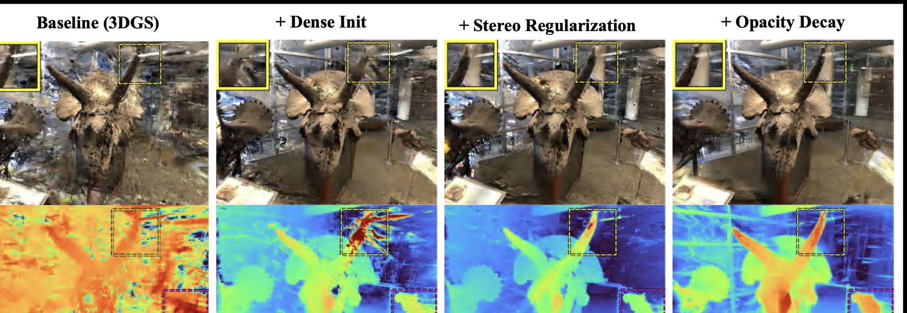
Effect of incrementally adding Consistency-Aware Dense Initialization (CI), Stereo Depth Regularization (SDR), and Gradient-Aware Opacity Decay (GOD). CI gives a strong geometric foundation (depth holes still present in fine details); SDR fills the holes and smooths the background; GOD finally prunes the remaining floaters around foreground boundaries.
Component Ablation (LLFF / DTU, 3 views)
| CI | SDR | GOD | LLFF PSNR↑ | LLFF SSIM↑ | LLFF LPIPS↓ |
DTU PSNR↑ | DTU SSIM↑ | DTU LPIPS↓ |
|---|---|---|---|---|---|---|---|---|
| ✗ | ✗ | ✗ | 16.02 | 0.465 | 0.378 | 10.99 | 0.585 | 0.313 |
| ✓ | ✗ | ✗ | 19.75 | 0.691 | 0.215 | 14.10 | 0.786 | 0.196 |
| ✗ | ✓ | ✗ | 17.32 | 0.524 | 0.317 | 12.46 | 0.697 | 0.208 |
| ✗ | ✗ | ✓ | 18.18 | 0.569 | 0.291 | 15.05 | 0.751 | 0.202 |
| ✗ | ✓ | ✓ | 18.96 | 0.605 | 0.262 | 17.66 | 0.784 | 0.172 |
| ✓ | ✓ | ✗ | 19.79 | 0.695 | 0.214 | 15.57 | 0.812 | 0.166 |
| ✓ | ✗ | ✓ | 21.18 | 0.741 | 0.171 | 19.76 | 0.863 | 0.112 |
| ✓ | ✓ | ✓ | 21.91 | 0.773 | 0.157 | 21.46 | 0.879 | 0.099 |
Deeper Analysis
Initialization point clouds
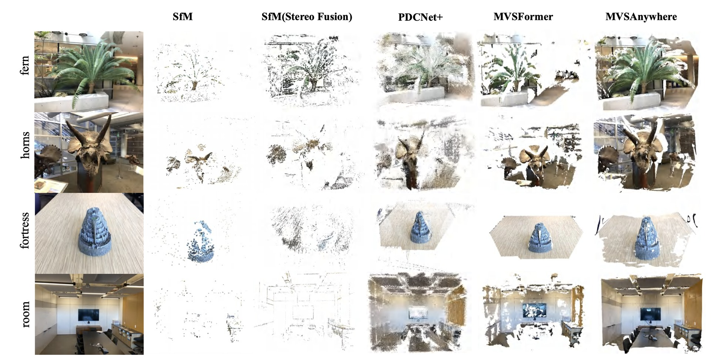
Compared to sparse SfM and other learning-based matchers (PDCNet+, MVSFormer), MVSAnywhere produces the densest, most uniformly distributed, and structurally most complete point clouds across the fern, horns, fortress, and room scenes.
MVS model ablation
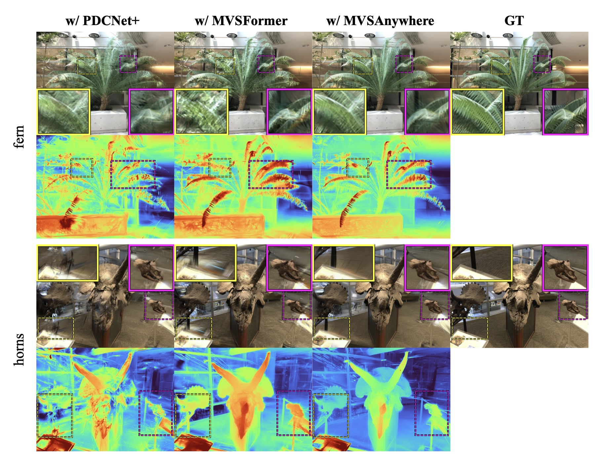
Swapping the initialization MVS model: SfM (sparse, 18.96 / 17.66 dB on LLFF / DTU) → PDCNet+ (20.10 / 19.81) → MVSFormer (21.08 / 20.71) → MVSAnywhere (21.91 / 21.46). MVSAnywhere's zero-shot generalization removes the pre-training domain gap and gives the best geometric foundation.
Stereo model ablation
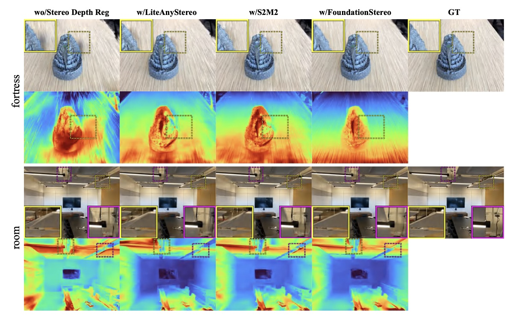
The Stereo Depth Regularization is a universal module: plugging in S2M2 or LiteAnyStereo also improves over the no-stereo baseline. FoundationStereo (default) yields the sharpest details and fewest artifacts.
Validity mask ablation
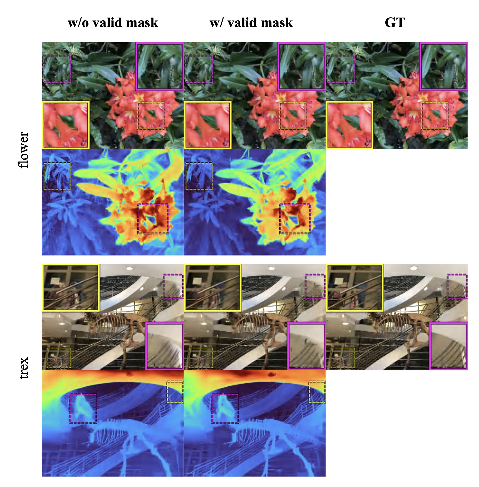
Without Mvalid, noisy priors in occluded / textureless regions
misguide the optimization, producing floaters and distorted geometry (e.g., the
trex skeleton). Our mask keeps supervision strictly on reliable pixels.
Opacity decay strategies
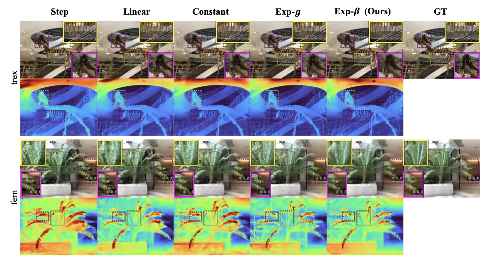
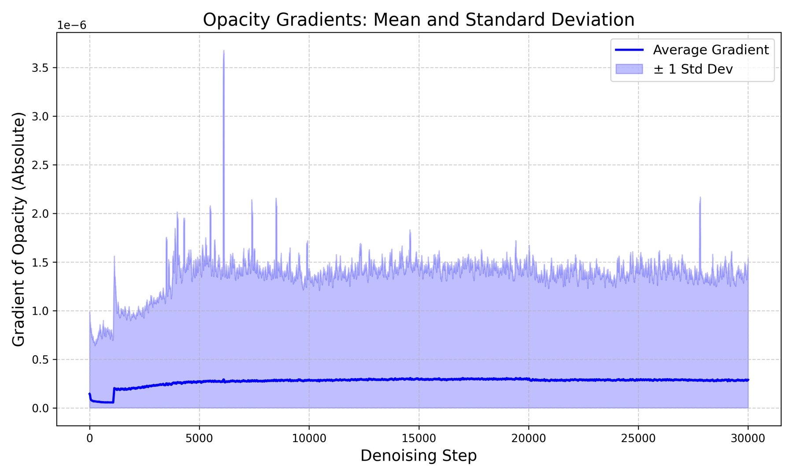
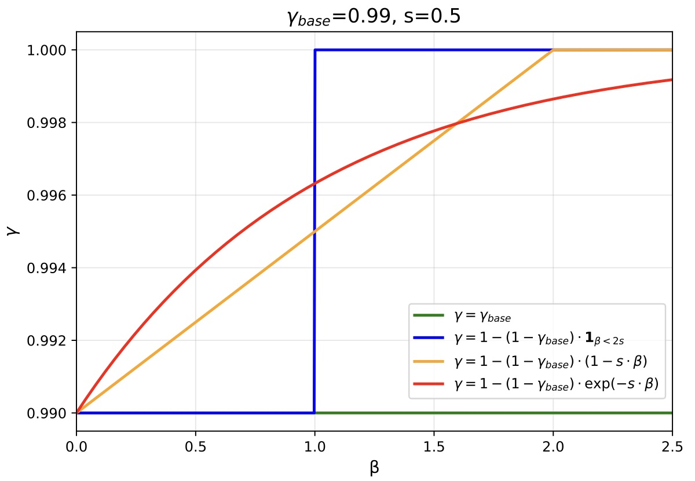
Left: Constant decay indiscriminately kills useful geometry; Step /
Linear fail to penalize moderate-to-high gradient floaters. Top-right:
decay function shapes. Bottom-left: raw opacity gradients are
extremely small (∼10−6), which is why using the relative gradient
β = g/ḡ is necessary.
When the exponential is applied to raw g instead of β, the
exponential term exp(−s·g) ≈ 1.0 and the function degenerates to a constant
(Exp-g ≈ 21.41 dB). Using the relative gradient β
— inspired by the relative-advantage idea in GRPO (DeepSeekMath) — provides a
scale-invariant normalization that lets our Exp-β reach 21.91 dB
on LLFF 3-view.
Limitations & Failure Cases
Honest accounting of where StereoGS still struggles.
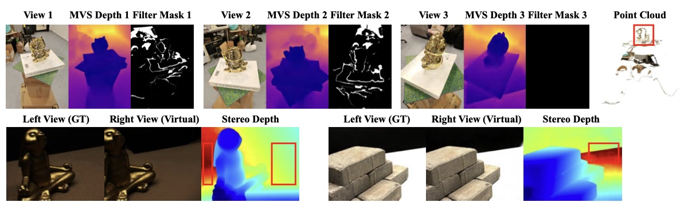
Top: Consistency-Aware Dense Initialization may fail on reflective objects on a specific view, because view-dependent reflections make MVS depths be filtered out by reprojection filtering. Bottom: Large textureless regions can make stereo matching ambiguous, producing erroneous stereo depth and inaccurate geometric constraints. Addressing these two failure modes is a promising direction for future work.
BibTeX
@inproceedings{yuan2026stereogs,
title = {{StereoGS}: Sparse-View 3D Gaussian Splatting via Stereo Priors},
author = {Yuan, Wenhao and Ge, Yiyuan and Cai, Deli},
booktitle = {European Conference on Computer Vision (ECCV)},
year = {2026},
url = {https://github.com/StringerYwh00/StereoGS}
}